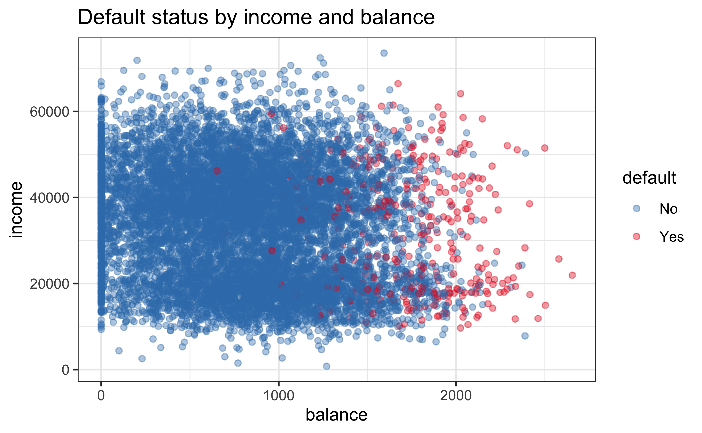
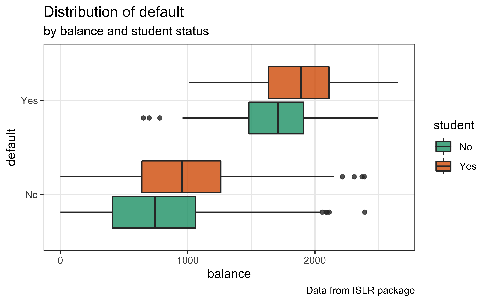
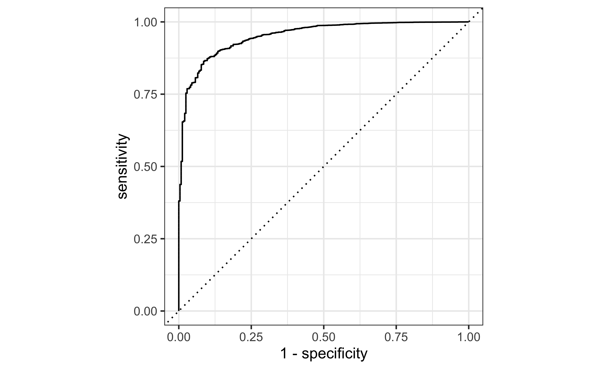
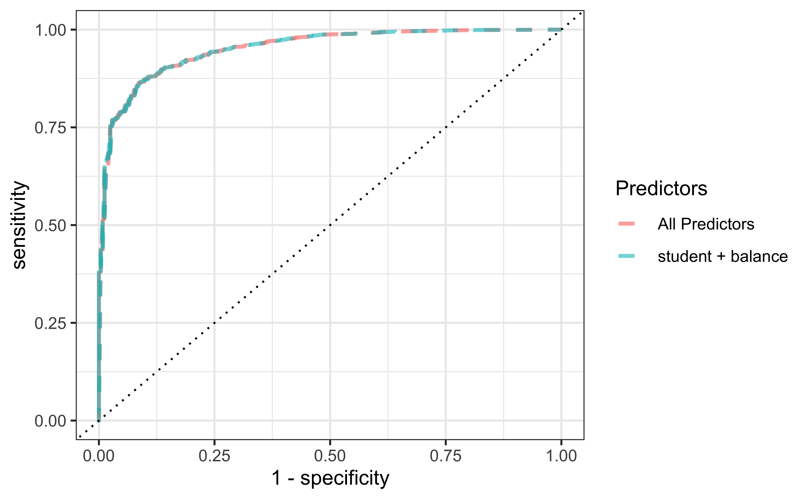
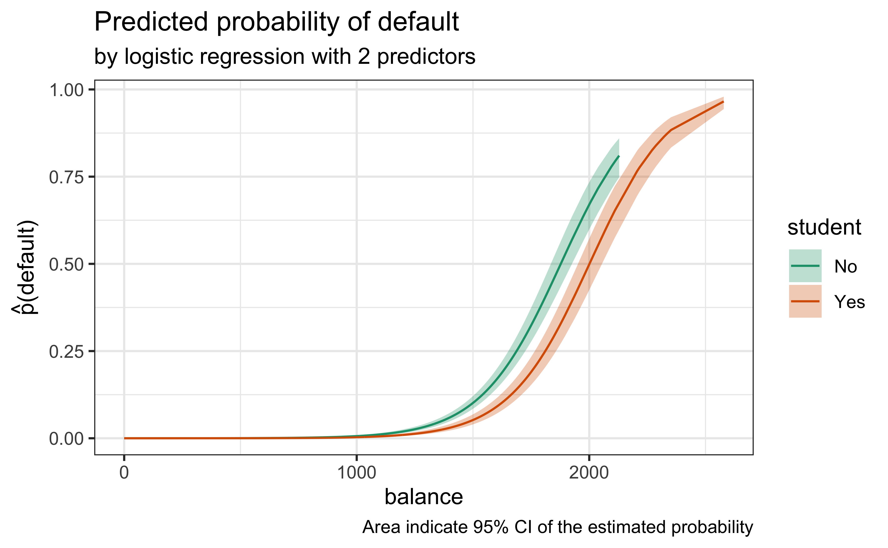

Code
library(tidyverse)
library(ISLR)
theme_set(theme_bw())My motivation and code I used in here is an adaptation from Dr.Julia Silage’s blog bird-baths. I’ve applied the similar modeling process to Default dataset from {ISLR} package [1].
The goal is to build logistic regression model to predict default status.
library(tidyverse)
library(ISLR)
theme_set(theme_bw())Let’s take a look at the Default data set. It has 2 numeric variables: balance and income; and 2 factor variables: default and student
summary(Default) default student balance income
No :9667 No :7056 Min. : 0.0 Min. : 772
Yes: 333 Yes:2944 1st Qu.: 481.7 1st Qu.:21340
Median : 823.6 Median :34553
Mean : 835.4 Mean :33517
3rd Qu.:1166.3 3rd Qu.:43808
Max. :2654.3 Max. :73554 Detailed summary can be done with skimr::skim()
skimr::skim(Default)| Name | Default |
| Number of rows | 10000 |
| Number of columns | 4 |
| _______________________ | |
| Column type frequency: | |
| factor | 2 |
| numeric | 2 |
| ________________________ | |
| Group variables | None |
Variable type: factor
| skim_variable | n_missing | complete_rate | ordered | n_unique | top_counts |
|---|---|---|---|---|---|
| default | 0 | 1 | FALSE | 2 | No: 9667, Yes: 333 |
| student | 0 | 1 | FALSE | 2 | No: 7056, Yes: 2944 |
Variable type: numeric
| skim_variable | n_missing | complete_rate | mean | sd | p0 | p25 | p50 | p75 | p100 | hist |
|---|---|---|---|---|---|---|---|---|---|---|
| balance | 0 | 1 | 835.37 | 483.71 | 0.00 | 481.73 | 823.64 | 1166.31 | 2654.32 | ▆▇▅▁▁ |
| income | 0 | 1 | 33516.98 | 13336.64 | 771.97 | 21340.46 | 34552.64 | 43807.73 | 73554.23 | ▂▇▇▅▁ |
Please note that there are no missing values, which is great!
The goal here is to build a logistic regression model to predict default.
I will explore the relationship between default and other variables (income, balace, student). Let’s make some plots!
Default %>%
ggplot(aes(balance, income, color = default)) +
geom_point(alpha = 0.4) +
scale_color_brewer(palette = "Set1", direction = -1) +
labs(title = "Default status by income and balance") 
By visual inspection, balance looks like a better predictor for default than income.
p1 <- Default %>%
ggplot(aes(balance, default, fill = student)) +
geom_boxplot(alpha = 0.8) +
scale_fill_brewer(palette = "Dark2") +
labs(title = "Distribution of default",
subtitle = "by balance and student status",
caption = "Data from ISLR package")
p1 
This plot shows that balance and student seem to be a decent predictor of default.
Goal: Outcome variable = default (factor)
First, I will use glm() function to build logistic regression model using all predictors.
glm_fit_all <- glm(default ~ ., data = Default, family = binomial)
summary(glm_fit_all)
Call:
glm(formula = default ~ ., family = binomial, data = Default)
Deviance Residuals:
Min 1Q Median 3Q Max
-2.4691 -0.1418 -0.0557 -0.0203 3.7383
Coefficients:
Estimate Std. Error z value Pr(>|z|)
(Intercept) -1.087e+01 4.923e-01 -22.080 < 2e-16 ***
studentYes -6.468e-01 2.363e-01 -2.738 0.00619 **
balance 5.737e-03 2.319e-04 24.738 < 2e-16 ***
income 3.033e-06 8.203e-06 0.370 0.71152
---
Signif. codes: 0 '***' 0.001 '**' 0.01 '*' 0.05 '.' 0.1 ' ' 1
(Dispersion parameter for binomial family taken to be 1)
Null deviance: 2920.6 on 9999 degrees of freedom
Residual deviance: 1571.5 on 9996 degrees of freedom
AIC: 1579.5
Number of Fisher Scoring iterations: 8Coefficient of income is not significant (p = 0.7115203). Let’s try remove income out.
glm_fit_st_bal <- glm(default ~ student + balance,
data = Default,
family = binomial)
glm_fit_st_bal
Call: glm(formula = default ~ student + balance, family = binomial,
data = Default)
Coefficients:
(Intercept) studentYes balance
-10.749496 -0.714878 0.005738
Degrees of Freedom: 9999 Total (i.e. Null); 9997 Residual
Null Deviance: 2921
Residual Deviance: 1572 AIC: 1578Model that include only student and balance has lower estimation of test error (i.e., AIC & BIC).
list("All Predictors" = glm_fit_all,
"student + balance" = glm_fit_st_bal) %>%
map_dfr(
broom::glance,
.id = "Model") %>%
select(Model, AIC, BIC)# A tibble: 2 × 3
Model AIC BIC
<chr> <dbl> <dbl>
1 All Predictors 1580. 1608.
2 student + balance 1578. 1599.Now, let’s apply full modeling process with tidymodels.
library(tidymodels)First, we need to spending data budgets in 2 portions: training and testing data.
set.seed(123)
# Split to Test and Train
Default_split <- initial_split(Default, strata = default)
Default_train <- training(Default_split) # 75% to traning data
Default_test <- testing(Default_split) # 25% to test data
Default_split<Analysis/Assess/Total>
<7500/2500/10000>I will use 10-Fold Cross-Validation to resample the training data.
set.seed(234)
Default_folds <- vfold_cv(Default_train, v = 10, strata = default)
Default_folds # 10-fold cross-validation using stratification
# A tibble: 10 × 2
splits id
<list> <chr>
1 <split [6750/750]> Fold01
2 <split [6750/750]> Fold02
3 <split [6750/750]> Fold03
4 <split [6750/750]> Fold04
5 <split [6750/750]> Fold05
6 <split [6750/750]> Fold06
7 <split [6750/750]> Fold07
8 <split [6750/750]> Fold08
9 <split [6750/750]> Fold09
10 <split [6750/750]> Fold10Note that I use strata = default because the frequency of each class is quite difference.
Default %>% count(default) default n
1 No 9667
2 Yes 333For each folds, 6750 rows will spend on fitting models and 750 spend on analysis of model performance:
Default_folds$splits[[1]] <Analysis/Assess/Total>
<6750/750/7500>glm_spec <- logistic_reg()
glm_specLogistic Regression Model Specification (classification)
Computational engine: glm rec_basic <- recipe(default ~ ., data = Default) %>%
step_dummy(all_nominal_predictors())
summary(rec_basic)# A tibble: 4 × 4
variable type role source
<chr> <chr> <chr> <chr>
1 student nominal predictor original
2 balance numeric predictor original
3 income numeric predictor original
4 default nominal outcome originalPreview of engineered training data
You can see that student was replaced by student_Yes with 0-1 encoding. What does it mean?
rec_basic %>%
prep(log_change = T) %>%
bake(new_data = Default_train)step_dummy (dummy_72FQt):
new (1): student_Yes
removed (1): student# A tibble: 7,500 × 4
balance income default student_Yes
<dbl> <dbl> <fct> <dbl>
1 730. 44362. No 0
2 817. 12106. No 1
3 1074. 31767. No 0
4 529. 35704. No 0
5 786. 38463. No 0
6 826. 24905. No 0
7 809. 17600. No 1
8 1161. 37469. No 0
9 0 29275. No 0
10 0 21871. No 1
# … with 7,490 more rowsFrom contrast() function we can see the dummy encoding of the student (factor) variable: No = 0, Yes = 1.
contrasts(Default$student) Yes
No 0
Yes 1workflow() will bundle blueprint of feature engineering and model specification together.
wf_basic <- workflow(rec_basic, glm_spec)
wf_basic══ Workflow ════════════════════════════════════════════════════════════════════
Preprocessor: Recipe
Model: logistic_reg()
── Preprocessor ────────────────────────────────────────────────────────────────
1 Recipe Step
• step_dummy()
── Model ───────────────────────────────────────────────────────────────────────
Logistic Regression Model Specification (classification)
Computational engine: glm doParallel::registerDoParallel()
ctrl_preds <- control_resamples(save_pred = TRUE)
## Fit
rs_basic <- fit_resamples(wf_basic, resamples = Default_folds, control = ctrl_preds)Warning: package 'rlang' was built under R version 4.1.2Warning: package 'vctrs' was built under R version 4.1.2head(rs_basic)# A tibble: 6 × 5
splits id .metrics .notes .predictions
<list> <chr> <list> <list> <list>
1 <split [6750/750]> Fold01 <tibble [2 × 4]> <tibble [0 × 1]> <tibble [750 × 6]>
2 <split [6750/750]> Fold02 <tibble [2 × 4]> <tibble [0 × 1]> <tibble [750 × 6]>
3 <split [6750/750]> Fold03 <tibble [2 × 4]> <tibble [0 × 1]> <tibble [750 × 6]>
4 <split [6750/750]> Fold04 <tibble [2 × 4]> <tibble [0 × 1]> <tibble [750 × 6]>
5 <split [6750/750]> Fold05 <tibble [2 × 4]> <tibble [0 × 1]> <tibble [750 × 6]>
6 <split [6750/750]> Fold06 <tibble [2 × 4]> <tibble [0 × 1]> <tibble [750 × 6]>From ROC curve we can see that it has pretty good upper-left bulging curve.
augment(rs_basic) %>%
roc_curve(truth = default, .pred_No) %>%
autoplot()
This would result in AUC (area under the ROC curve) and accuracy close to 1.
collect_metrics(rs_basic)# A tibble: 2 × 6
.metric .estimator mean n std_err .config
<chr> <chr> <dbl> <int> <dbl> <chr>
1 accuracy binary 0.974 10 0.00194 Preprocessor1_Model1
2 roc_auc binary 0.953 10 0.00461 Preprocessor1_Model1As we can see from the beginning, removing income from predictor result in better estimation of test error by AIC and BIC.
Now, I will remove income from the recipes:
rec_simple <- rec_basic %>%
remove_role(income, old_role = "predictor")
summary(rec_simple)# A tibble: 4 × 4
variable type role source
<chr> <chr> <chr> <chr>
1 student nominal predictor original
2 balance numeric predictor original
3 income numeric <NA> original
4 default nominal outcome originalAnd I will update the WorkFlow
wf_simple <- workflow(rec_simple, glm_spec)Then the rest is the same. So, I wrote a simple wrapper function to do it.
update_workflow <- function(wf) {
ctrl_preds <- control_resamples(save_pred = TRUE)
rs <- fit_resamples(wf, resamples = Default_folds, control = ctrl_preds)
rs
}
rs_simple <- update_workflow(wf_simple)rs_ls <- list("All Predictors" = rs_basic,
"student + balance" = rs_simple)roc_df <- rs_ls %>%
map_dfr(~augment(.x) %>% roc_curve(truth = default, .pred_No),
.id = "Predictors"
)This plot show comparison of ROC curves of the 2 logistic regression models.
student, balance and income.student and balance.roc_df %>%
ggplot(aes(1-specificity, sensitivity, color = Predictors)) +
geom_line(size = 1, alpha = 0.6, linetype = "dashed") +
geom_abline(intercept = 0, slope = 1, linetype = "dotted")
rs_ls %>%
map_dfr(
collect_metrics, .id = "Features"
)# A tibble: 4 × 7
Features .metric .estimator mean n std_err .config
<chr> <chr> <chr> <dbl> <int> <dbl> <chr>
1 All Predictors accuracy binary 0.974 10 0.00194 Preprocessor1_Model1
2 All Predictors roc_auc binary 0.953 10 0.00461 Preprocessor1_Model1
3 student + balance accuracy binary 0.974 10 0.00194 Preprocessor1_Model1
4 student + balance roc_auc binary 0.953 10 0.00461 Preprocessor1_Model1You can see that a simpler model result in a similar (or may be slightly improved) AUC. So it’s reasonable to prefer it over more complicated model.
In this section, I will evaluate the simpler model with 2 predictors (student, balance).
First, fit the model to training data.
Default_fit <- fit(wf_simple, Default_train)
Default_fit══ Workflow [trained] ══════════════════════════════════════════════════════════
Preprocessor: Recipe
Model: logistic_reg()
── Preprocessor ────────────────────────────────────────────────────────────────
1 Recipe Step
• step_dummy()
── Model ───────────────────────────────────────────────────────────────────────
Call: stats::glm(formula = ..y ~ ., family = stats::binomial, data = data)
Coefficients:
(Intercept) balance student_Yes
-10.85340 0.00578 -0.71313
Degrees of Freedom: 7499 Total (i.e. Null); 7497 Residual
Null Deviance: 2158
Residual Deviance: 1139 AIC: 1145Then, use test data to predict default.
Default_pred <-
augment(Default_fit, Default_test) %>%
bind_cols(
predict(Default_fit, Default_test, type = "conf_int")
)library(latex2exp)
p2 <- Default_pred %>%
ggplot(aes(balance, .pred_Yes, fill = student)) +
geom_line(aes(color = student)) +
geom_ribbon(aes(ymin = .pred_lower_Yes, ymax = .pred_upper_Yes),
alpha = 0.3) +
scale_fill_brewer(palette = "Dark2") +
scale_color_brewer(palette = "Dark2") +
labs(y = TeX("$\\hat{p}(default)$"),
caption = "Area indicate 95% CI of the estimated probability") +
labs(title = "Predicted probability of default",
subtitle = "by logistic regression with 2 predictors")
p2 
This plot show estimated probability of default if we know the values of predictors: student and balance by using logistic regression model fitted on training data. The prediction was made by plugging test data to the model.

The left-sided plot showed default status by balance and student status as observed in the Default data set. After multivariate logistic regression model (default on balance and student) was fitted to the training data, the predicted probability of default using the model was shown in the right-sided plot.